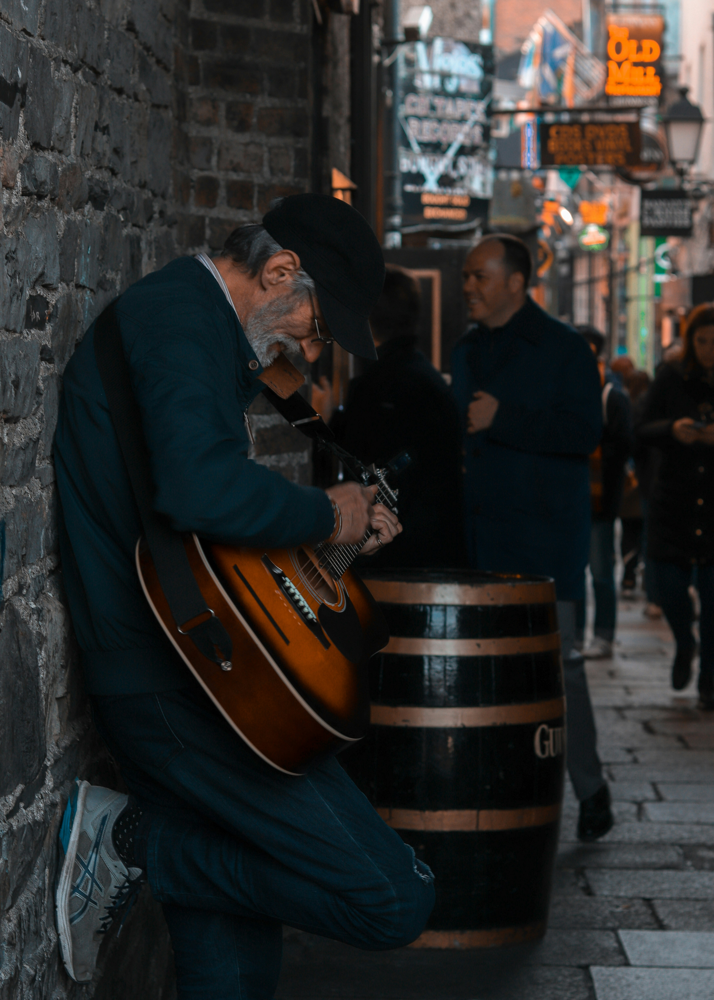
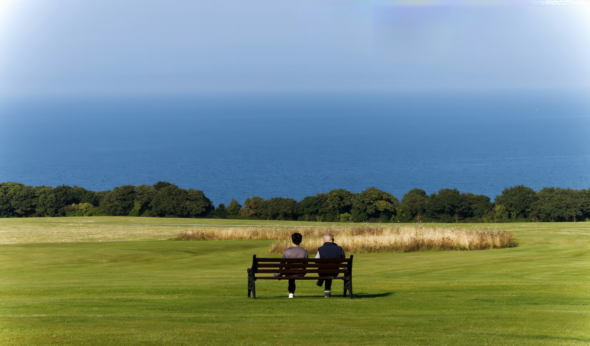
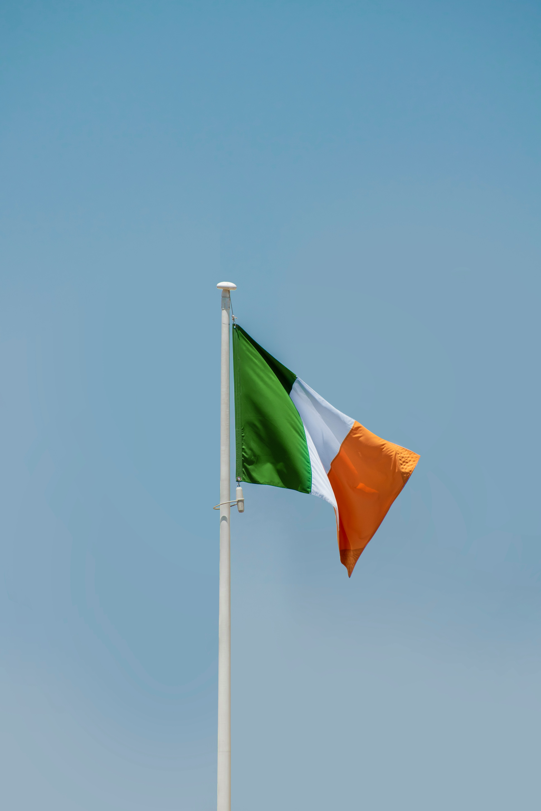
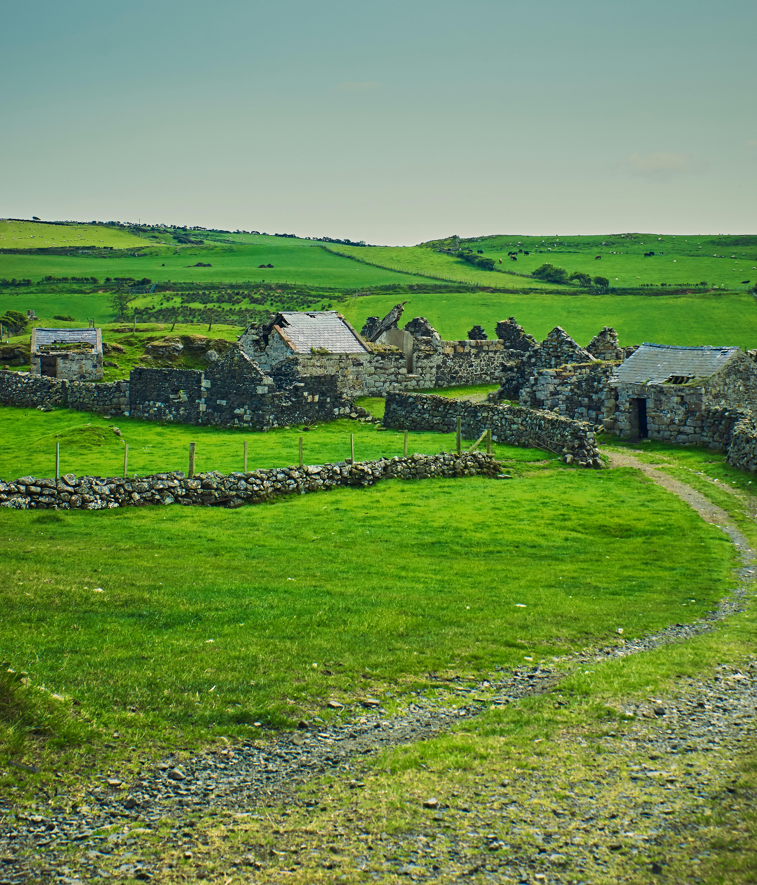

Traditional Irish music, folk songs, and dances like the jig and reel are a vital part of Irish culture. Live music sessions can often be found in pubs and festivals, bringing communities together and preserving centuries-old traditions.

Irish (Gaeilge) remains an important part of Ireland’s national identity, taught in schools and used in signage and media. Ireland also has a rich literary heritage, with world-renowned writers such as James Joyce, W.B. Yeats, and Seamus Heaney shaping global literature.

Celebrations like St. Patrick’s Day, St. Brigid's Day and local fairs highlight Ireland’s history, folklore, and communal spirit. Seasonal festivals, music events, and harvest gatherings allow both locals and visitors to experience Ireland’s vibrant traditions firsthand.

Ireland's folklore is filled with stories of fairies, leprechauns, and legendary heroes such as Cú Chulainn and Fionn mac Cumhaill. These myths are passed down through generations and continue to influence art, literature, and everyday cultural references.